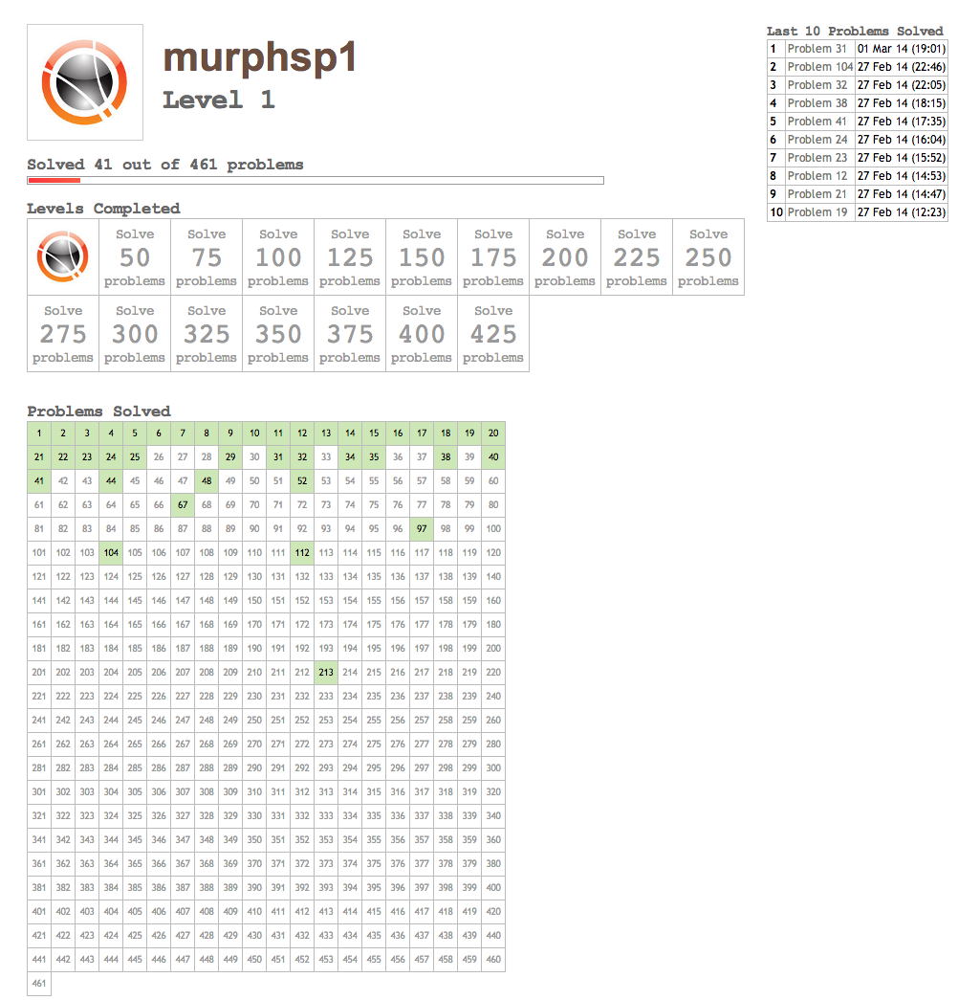
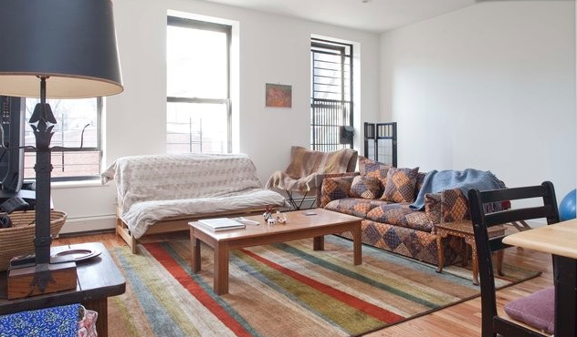

Now that the fourth week is coming to a close at Hacker School, I thought it would be a great time to reflect on what I have actually accomplished with this time. Another post will see me struggle with what exactly Hacker School is and yet another post will detail my ever changing plans for this unique time.
Before diving into details, the reader should know that HS officially takes place Monday - Thursday with an afternoon "jobs" session on Friday.
Mondays - Thursdays
So, what have I done Monday - Thursday for the last four weeks?
Acclimated to a Weird and Wonderful New World
HackerSchool is unlike any educational experience that I have been to or through before. No formal instructors. No curriculum. No structure. Just a pot full of smart and sincere folks all trying to learn. Groups form and disband. Projects come and go.
So, part of the last 4 weeks was just trying to get used to this wonderful new world and adjust my original plans and goals for HS. More on that in another post.
Never Lunched Alone
My fellow classmates are one of the best parts of HackerSchool and everyone has to eat lunch.
Read Hackers & Painters
I have read through Paul Graham's Hackers & Painters book, which is both an excellent and very appropriate read for my current situation. While I was a bit turned off when I first met him, I find myself agreeing with many of his contrarian points.
Books now consume both my ride to and from HS, given sufficient space on the subway. I tried Audible, particularly Nate Silver's Signal and the Noise, but haven't quite gotten hooked yet. Clearly, I am not an audio-oriented learner.
Become semi-addicted to Project Euler
A new friend introduced me to Project Euler, a website that contains over 400 increasingly difficult math-oriented programming challenges. Or, in the words of the site:
"Project Euler is a series of challenging mathematical/computer programming problems that will require more than just mathematical insights to solve. Although mathematics will help you arrive at elegant and efficient methods, the use of a computer and programming skills will be required to solve most problems."
Forty one problems done and 420 to go. The harder the problem, the more rewarding the solution and I really enjoyed problem 213. While doing problems is a bit of a regression toward my previous life in science, it has been a great excuse to code small tasks in Python and NumPy (and an opportunity to compare the two). 
Web Frameworks and Flask
One of my key goals for Hacker School was to dive into the world of web programming. Coming from a science and engineering background, the web stack was not part of my formal training.
Django and Flask, while not the only two options, seem to be the two most popular web frameworks in Python. One HS alum in particular sold me on learning Flask instead of Django. To paraphrase his words of wisdom, Flask allows you to build up the framework that you need and want and understand whereas Django is just a large clump of other peoples' decisions.
This month I have worked my way through a ridiculous number of Flask tutorials and even the new Web Development with Flask book. So far so good.
Fell in Love with VIM-Adventure
VIM Adventures is an incredible educational game that uses a Legend of Zelda-like game to teach the finer details of VI keyboard commands. I can't say enough about the production quality of this title and how effective it has been in teaching me new ways to use VIM.
Part of my excitement around this game is that I wanted to use Hacker School to advance my tooling and my ability to use those chosen tools. Much more about that in another post.
Launched a Pelican-powered Personal Blog
If you are reading this post you can see firsthand the fruits of my labor. Pelican is one of the increasingly popular static site generators similar to Jekyll but in Python and not Ruby. There are a number of things that I like about Pelican, including its use of Jinja2 templates, but the fact that it is pretty easy to publish your "blog" to GitHub Pages made my decision to switch from Wordpress an easy one.
Thanks goes out to the very helpful Amy Hanlon (fellow Hacker Schooler) and her excellent blog post/tutorial. As you can tell, the blog is still a work in progress.
Fridays
We did not have a job session the week of the first Friday and I chose not to attend the first jobs session (on Hash Tables) but realize that was a mistake. It turns out, unlike business school, small-group problem solving focused on a particular topic is a fantstic way to build specific skills and interact with fellow HSers.
Studied Recursion
Coming from a non computer science background, recursion was never my preferred tool for solving problems. During the second jobs Friday, we tackled a large number of problems with recursion, starting from recursively finding the largest number in a list to solving the number of ways to make change for a given amount of money and a specified set of coins.
Weekends
You can cluster the cohort at HS in a few ways. One partial pattern that I have seen is a difference in behavior between those who moved to NYC from afar and those who were already in NYC. The latter group, firmly implanted in NYC, have numerous other draws on their time and focus outside of HackerSchool whereas those who come from afar seem to be more "all in."
As a result, I feel compelled to look at what I have done with my weekends as well.
Furnished an Apartment
Since mid-January, alot of free time has been consumed furnishing a lovely apartment in the Upper West Side/south west Harlem. See ridiculously well done photo below. (Note, I did not take that photo). Hopefully, there will be a house warming party soon. 
Birthday and Valentine's Day Weekend
I have the good fortune of sharing a birthday with Abe Lincoln, two days before Valentine's Day. Thus, the first weekend of HS was my birthday weekend where I stayed as far from my laptop as humanly possible (at least for Saturday).
Extracurriculars
I was really hoping to enter Hacker School without the real world intruding but a number of external projects have reqired some TLC.
Hopkins
I have been collaborating with a few researchers at JHMI since last summer and am finally seeing the first fruits of our efforts. We just received notice that our first joint "publication," an oral presentation at the 2014 Sleep conference entitled "“Characterizing Sleep Of Critically Ill Children In The Pediatric Intensive Care Unit With The Fast Fourier Transform," was accepted. Of course, this will mean more writing and editing and plot generating ...
JHU APL
It only took 15 years but I have finally resigned my position at the Johns Hopkins University Applied Physics Laboratory. I am almost done with the paperwork, almost. Now I just need to get health care sorted.
Packt Publishing
I am co-leading the effort to write a Data Science Cookbook filled with about thirteen 30-page chapters. Over the last month, I have written two chapters and edited 4 others; this has been much more time consuming than I had predicted.
Start Up
Last and certainly not least I am pushing forward with a startup that is currently in stealth mode. More to come in about six months or so ...